Applied AI:
unstructured data
Messages, reviews, photos, documents: most of the world's data has no columns. How does a computer read it, see it, and put words and pictures in the same place?
Most data doesn't fit in a table
Structured fixed schema
Rows × columns. Every cell is already a number or a category.
| age | city | spent € |
|---|---|---|
| 34 | Porto | 120.5 |
| 27 | Lisbon | 48.0 |
| 51 | Braga | 310.9 |
e.g. spreadsheets, SQL databases
For a model: easy. Columns go straight in as features.
Semi-structured keys & tags
Has labels, but a flexible shape and free-text values.
e.g. JSON, emails, web pages
For a model: medium. Fields are easy, the free text is not.
Unstructured no schema
Raw characters or pixels. No columns, no labels.
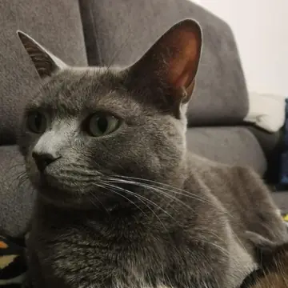
e.g. messages, reviews, photos, scans
For a model: hard. We must build the numbers ourselves.
How does a computer read and see?
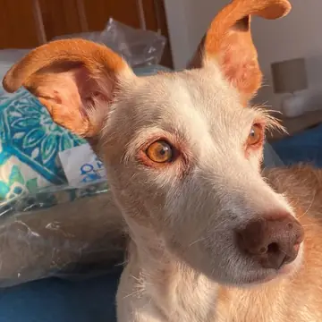
AI on unstructured data is in your pocket
Arrived fast, love it!
😊 happyBroke after two days.
😠 angryGood, but way too pricey
😐 mixed📄 HR-handbook.pdf · p. 4
Run it your way
git clone https://github.com/the-ai-learning-hub/03-applied-ai-projects cd 03-applied-ai-projects && uv sync
$ uv run jupyter lab
Works everywhere. uv sync installs the CPU version of PyTorch; heavy steps are just slower.
$ uv pip install torch torchvision \
--index-url https://download.pytorch.org/whl/cu128
Swaps in the GPU build of PyTorch. Careful: running uv sync again puts the CPU build back.
Nothing to install: open the repo in Colab and switch the runtime.
if torch.cuda.is_available(): "cuda" else "cpu"The code detects a GPU by itself: same code, any of the three paths.Text mining
How do words become numbers that a model can learn from?
Text mining: getting answers out of text, automatically
A program reads thousands of texts (messages, reviews, e-mails, news) and pulls out what a person would need hours to find: labels, opinions, topics, names, the right document.
"WIN a FREE prize, call now!!"
"the battery dies by lunch 😩"
"Benfica won 3-1 last night…"
"cheap flights to Lisbon"
"Meet Ana in Porto on 3 May"
Chatbots, translation and summaries start with the same first steps you will learn here.
Models eat tables of numbers. Text is not a table.
| petal len | petal wid | sepal len | y |
|---|---|---|---|
| 1.4 | 0.2 | 5.1 | setosa |
| 4.7 | 1.4 | 7.0 | versicolor |
| 6.0 | 2.5 | 6.3 | virginica |
model.fit(X, y) · same columns for every row, only numbers
Every model you trained so far (logistic regression, trees, the MLP) received X: one row per example, a fixed list of numeric columns.
A token is the unit a model reads
"I love this phone!"
The model never sees letters. It receives a list of numbers:
[14, 302, 27, 1190, 3]
Token
One piece of text treated as one unit: a whole word, a piece of a word, a single character, or a symbol like !
Tokenizer
The rule (or program) that cuts text into tokens. Different tokenizers, different pieces.
Token id
Each distinct token gets a number, like a word's position in a dictionary.
The simplest tokenizer: cut at every space
tokens = "I love this phone, it's GREAT!! 😍".split() # cut wherever there is a space
"phone," ≠ "phone"
punctuation stays glued to the word
"it's": one token, or "it" + "'s"?
there is no single right answer
"GREAT!!" ≠ "great"
capitals and !! make a new token
.split() works, but the computer now thinks phone, and phone are two different words. We need to clean the text first.Clean first: lower case, then keep only letters
import re text = "I love this phone, it's GREAT!! 😍" clean = text.lower() # GREAT -> great tokens = re.findall(r"[a-z0-9']+", clean) print(tokens)
['i', 'love', 'this', 'phone', "it's", 'great']
Stop words: very common words that say little
A typical stop-word list
They appear in almost every text, so they tell us little about what a text is about.
Words, characters, or pieces of words?
| tokens are… | result | tokens | vocabulary | new word or typo? |
|---|---|---|---|---|
| words | unbelievablyslow! | 3 | huge: play, plays, played, playing… all different | [UNK] unknown, the word is lost |
| characters | unbelievably␣slow! | 18 | tiny: about a hundred symbols | never unknown, but very long sequences and each piece means little |
| sub-words | unbelievablyslow! | 5 | fixed menu: tens of thousands of pieces | never unknown: built from smaller known pieces |
Choosing the pieces: Byte-Pair Encoding (BPE)
BPE on a tiny text: merge, count, repeat
Modern models read sub-words
WordPiece · BERT (2018)
Vocabulary of 30,522 pieces. unbelievable → un ##believ ##able.
BPE on bytes · GPT-2 (2019)
Vocabulary of 50,257 pieces. Works on raw bytes, so any text, emoji or alphabet can be encoded.
No word is ever lost
A rare word becomes several common pieces instead of [UNK].
Why tokens matter today
of a word
Rule of thumb for English: 1 token ≈ 4 characters ≈ ¾ word. 100 tokens ≈ 75 words.
you pay per token
LLM services bill the tokens you send and the tokens the model writes back.
memory in tokens
The "context window" (how much text fits at once) is measured in tokens, not pages.
not all languages are equal
The same content can need many more tokens in some languages than in English.
From text to tokens… and then?
Text mining
Extract labels, opinions, topics and facts from text, automatically.
Tokens
Text is cut into units: from .split() and regex to sub-words.
Choices matter
Case, punctuation, emoji, stop words: keep what helps the task.
The simplest idea: a dictionary of word scores
AFINN: 3,382 English words, each given a score from −5 to +5 by a person. VADER: about 7,500 entries for social media, plus rules (next slide).
dashed = not in the dictionary → counts as 0
+3 + 2 = +5 → positive 🙂
Try it: AFINN vs VADER on the same sentence
AFINN
integer word scores −5 … +5, added upVADER
word scores −4 … +4 + rules, squeezed into −1 … +1Where a hand-written dictionary breaks
First, list every word we have seen: the vocabulary
Then each text becomes a row of counts
A corpus becomes a table that is almost all zeros
One row per text, one column per vocabulary word. Already here, 47 of 72 cells are zero.
99.85% of the cells are zero: a sparse matrix. Python stores only the non-zeros: about 1 MB instead of ~390 MB.
Rows of counts are ready for machine learning
| message | free | prize | call | lunch | ok | label |
|---|---|---|---|---|---|---|
| "FREE prize! call now" | 1 | 1 | 1 | 0 | 0 | spam |
| "ok, see you at lunch" | 0 | 0 | 0 | 1 | 1 | ham |
| "call me after lunch" | 0 | 0 | 1 | 1 | 0 | ham |
| "free free prize!!" | 2 | 1 | 0 | 0 | 0 | spam |
| X · the counts | y | |||||
model.fit(X, y) learns a weight per word | +1.9 | +1.6 | +0.3 | −1.4 | −1.1 | |
The bag forgets word order… and negation
Two classic fixes: word pairs and "not_" marking
Fix 1 · n-grams
Also count pairs of neighbouring words (bigrams). "not good" becomes a column of its own.
scikit-learn: CountVectorizer(ngram_range=(1, 2)) · price: many more columns
Fix 2 · negation marking
After not · no · never · n't, glue not_ onto every word until the next punctuation mark.
TF: how often a word appears in this text
Plain counts have one more problem: the most frequent words are often the least interesting. A new toy corpus of 5 short reviews:
IDF: how rare a word is across all texts
TF-IDF = TF × IDF
Counting doesn't know what words mean
| great | excellent | terrible | movie | film | |
|---|---|---|---|---|---|
| A · "a great movie" | 1 | 0 | 0 | 1 | 0 |
| B · "an excellent film" | 0 | 1 | 0 | 0 | 1 |
| C · "a terrible movie" | 0 | 0 | 1 | 1 | 0 |
What we would like
Words as points on a map: similar words close together.
Words used in similar contexts get similar numbers
Guess the hidden word
I drink ____ every morning
a hot cup of ____, please
____ with milk, no sugar
coffee and tea appear next to the same neighbours, so they probably mean similar things.
How GloVe turns this into numbers
… a hot cup of coffee with milk , no …
A word vector: 50 numbers, drawn as coloured cells
Similar words end up close together
The map squashes 50 numbers into 2. Nobody told GloVe these groups: they come only from which words appear together in text.
Cosine similarity: the angle between two arrows
- Small angle → cosine near 1: similar words.
- Only the direction counts, not the length.
king + woman − man ≈ queen
One vector per word, whatever the sentence
One word, two meanings
I sat on the river bank
the bank blocked my card
Both get the same 50 numbers. GloVe's closest words to "bank":
Opposites live in the same places
"good" and "bad" appear in the same sentences, so their vectors are close:
| good · bad | 0.80 |
| "great film" · "excellent movie" | 0.89 |
| "great film" · "terrible film" | 0.89 |
Text becomes a table again
| message | free | prize | call | lunch | home | … | label (y) |
|---|---|---|---|---|---|---|---|
| "Free prize! Call now" | .52 | .61 | .38 | 0 | 0 | … | spam |
| "Lunch at home?" | 0 | 0 | 0 | .71 | .70 | … | ham |
| "Call me when home" | 0 | 0 | .55 | 0 | .58 | … | ham |
Rows = examples, columns = features, one target column. Exactly the tables you already know.
Spam or ham? You be the filter
ham = a normal message from a person. spam = unwanted mass advertising.
Which clues did you use? Words, numbers, capitals, "£"…
Happy or unhappy? Guess the label
Harder than spam: sarcasm, mixed feelings, slang.
Labels come from people, and people sometimes disagree. Look at tweet 6.
What kind of ML problem is this?
The accuracy trap
A model that never reads the message gets 87% accuracy… and catches zero spam.
Precision, recall, F1 and macro-F1
Spam filter: precision or recall?
One spam slips through. You delete it in two seconds.
A real message is hidden. You miss the meeting.
Six classic models for text
Naive Bayes
Each word is a clue for one class; combine all the clues.
Logistic regression
One weight per word; add them up, squash into a probability.
Linear SVM
Draw the line with the widest gap between the two classes.
KNN
Find the k most similar texts and let them vote.
Random forest
Many decision trees ask yes/no about words, then vote.
XGBoost
Trees built one after another, each fixing the errors of the last.
Now, in practice
Open the notebook, run it and analyse the results.
01_text_mining/01_mini_project_sms_spam/ 01_Text_Mining_Basics_SMS_Spam.ipynb
One fixed view per word misses context
"the dog bit the man"
"the man bit the dog"
"the movie was not bad at all"
"I sat by the river bank"
"the bank closed my account"
Attention: each word looks at the others
Same word, different vector
bank here = 20% × bank on its own + 80% × the weighted mix (toy recipe)
A transformer is a stack of layers
Read it from the bottom up
Tokens go in at the bottom, contextual vectors come out at the top. Click the steps to walk through it, or use ← → inside the demo.
BERT-base: 12 layers · 768 numbers per token · 110 M parameters
Encoders understand, decoders generate
Encoder · reads the whole text
Trained to fill in a hidden word, using the words on both sides.
Decoder · predicts the next token
Trained to guess the next token, seeing only the words before it. Here it always appends the most likely one.
Pre-training: learn language from raw text
BERT read 3.3 billion words (books + English Wikipedia). Training it once costs a lot; reusing it costs almost nothing.
Three ways to reuse a pretrained model
1 · Use it as is
Someone already fine-tuned it for sentiment. We only run it. With a zero-shot model we just name the labels we want.
2 · Feature extraction
The model turns each text into a vector; a classic model (LogReg) learns our labels on top.
3 · Fine-tuning
Continue training all the weights on our labelled texts for a few epochs, so the model adapts to our data.
A few lines of code for each way
from transformers import pipeline
clf = pipeline("sentiment-analysis",
model="cardiffnlp/twitter-roberta-base-sentiment-latest")
clf("the movie was not bad at all")from transformers import pipeline
clf = pipeline("zero-shot-classification",
model="facebook/bart-large-mnli")
clf("my parcel arrived broken, again",
candidate_labels=["complaint", "praise", "question"])from sentence_transformers import SentenceTransformer
from sklearn.linear_model import LogisticRegression
enc = SentenceTransformer("all-MiniLM-L6-v2")
X = enc.encode(texts) # one vector per text
clf = LogisticRegression().fit(X, labels)
clf.predict(enc.encode(["not bad at all"]))from transformers import (AutoModelForSequenceClassification,
Trainer, TrainingArguments)
model = AutoModelForSequenceClassification.from_pretrained(
"distilbert-base-uncased", num_labels=2)
args = TrainingArguments("out", num_train_epochs=2)
Trainer(model=model, args=args,
train_dataset=train_ds).train()–
–
pipeline(…) does for youOne architecture, many everyday tools
🌍 Translation
encoder + decoder📝 Summarisation
encoder + decoder · decoder❓ Question answering
encoderQ: When was it introduced?
💬 Chat assistants
decoderFrom counting words to understanding context
a score per word
counts, order lost
one vector per word
one vector per word in its sentence
Now, in practice
A real project in six notebooks: open them in order and analyse the results.
01_text_mining/02_project_tweets/ 02.0_Tweets_EDA.ipynb … 02.5_Tweets_Generative_LLMs.ipynb
Recap + discussion
- Tokens → vocabulary → numbers: every text becomes a row of numbers.
- TF-IDF rewards words frequent here and rare elsewhere; GloVe gives each word one vector.
- Imbalanced classes: judge by macro-F1, not just accuracy.
- Transformers use attention to give each word a vector that depends on its context; pretrained once, then reused as is, as features or fine-tuned.
🎚️ Challenge 1 · Flip It!
The model is sure: “I love this sunny day” is 85 % positive. Change as few words as possible to make it say the opposite.
- Type, watch it move: every word lights up by how hard it pushes the model, a gauge slides from NEGATIVE to POSITIVE as you type.
- 1 swap = one word added, removed or replaced. Fewer swaps, shinier medal.
- 5 levels, each with a twist: 🌞 warm-up · 🚑 rescue a sad sentence · 🎭 liar mode (a human must still read it as happy) · ➕ add-only · 💀 the boss, 99.98 % sure.
01_text_mining/03_challenge_flip_it/ Challenge_1_Flip_It.ipynb
Computer vision
How does a grid of pixel numbers become “that's a cat”?
Teaching computers to understand images
Computer vision is the part of AI that extracts information from images and video. Three classic questions it answers:
Classification
What is in the image? One label for the whole picture.
Object detection
What and where? A box and a label for every object.
Segmentation
Which pixels belong to what? A label for every pixel.
You use computer vision every day
Face unlock
The phone checks that the face in front of the camera is yours.
Photo search
Type "dog" or "beach" in your gallery and the right photos appear.
Driver assistance
Cars spot pedestrians, other cars and traffic signs in real time.
Medical imaging
Outlining a tumour or an organ on a scan to help the doctor measure it.
Factory quality
A camera over the production line finds scratches and broken parts.
Agriculture
A photo of a leaf tells the farmer which plant disease it has.
For a computer, an image is a grid of numbers
Remember load_digits? Each picture was an 8 × 8 grid: 64 cells, one number per cell.
- Each cell is a pixel ("picture element")
- The number is its brightness: 0 = black, bigger = brighter
- Those digits used 0–16; most images use 0–255
A colour image is three grids stacked
Zoom in until the photo becomes numbers
Each pixel is 3 numbers: how much red, green and blue light, from 0 to 255. Look at one colour at a time:
Image classification: one image in, one label out
Fashion-MNIST: 70,000 small photos of clothes
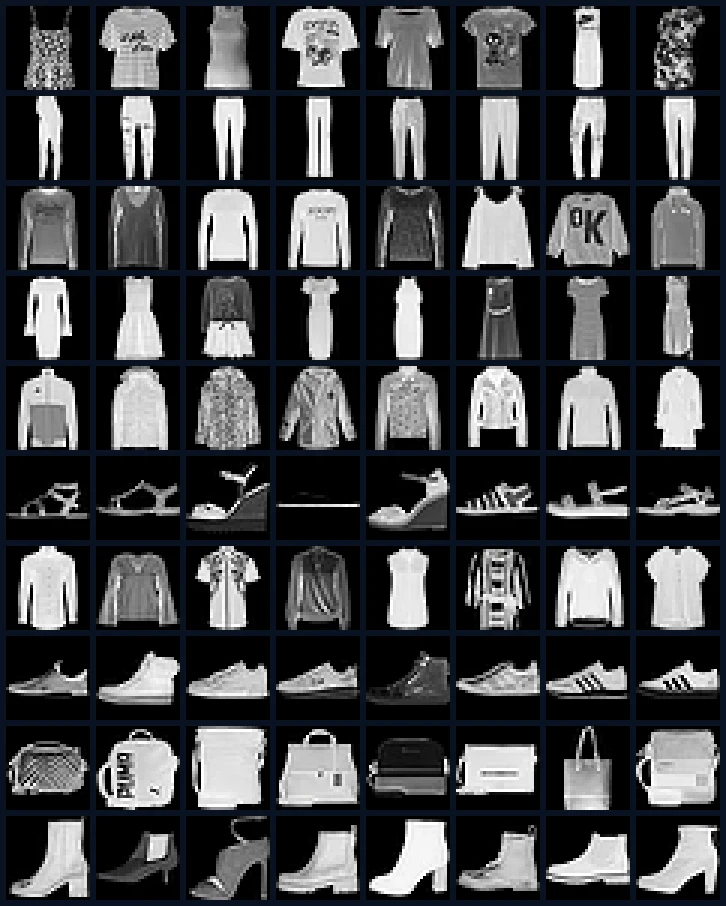
Created by Zalando Research (2017) as a harder drop-in replacement for MNIST, the classic dataset of handwritten digits.
One item = 784 numbers
Background pixels are 0; the item is bright. To a model, this image is just this list of 784 numbers.
Remember the MLP? Flatten and feed it
Every neuron is connected to every number of the layer before ("fully connected"). Count the weights:
| 784 × 256 + 256 | 200,960 |
| 256 × 128 + 128 | 32,896 |
| 128 × 10 + 10 | 1,290 |
| total | 235,146 |
Flattening forgets the neighbours
Convolutional neural networks: look at small patches
Look locally
Each unit looks at a small patch (e.g. 3 × 3 pixels): neighbours stay together.
Reuse everywhere
The same small detector scans the whole image: an edge is an edge, wherever it is.
Build up
Simple patterns are combined, layer after layer, into bigger ones.
A kernel: multiply, then add
A kernel (or filter) is a tiny grid of weights, here 3 × 3. Put it on a 3 × 3 patch of the image, multiply cell by cell, add everything up: one number.
Slide the kernel → a feature map
Convolution gives us a lot of numbers
Pooling: shrink, keep the strongest
Cut the feature map into 2 × 2 blocks and keep only the biggest number of each block.
- 4× fewer numbers: 25,088 → 6,272
(28 × 28 × 32 → 14 × 14 × 32) - Keeps "the pattern is around here", forgets the exact pixel
- A pattern moved by one pixel often gives the same result
- No weights to learn: it is a fixed rule
Stack layers: edges → shapes → parts → objects
MLP vs CNN: what changes
MLP · fully connected
Each neuron sees every pixel, with its own weight for each.
CNN · local + shared
Each output sees a 3 × 3 patch; the same 9 weights slide everywhere.
| MLP | CNN | |
|---|---|---|
| Looks at | all pixels at once | small neighbourhoods |
| Weights for one detector, 28 × 28 grey | 784 + 1 | 3 × 3 + 1 = 10 |
| … on a 224 × 224 colour photo | 150,528 + 1 | 3 × 3 × 3 + 1 = 28 |
| Object moved a few pixels | looks like a new input | same detectors fire, just shifted |
A small CNN in PyTorch
import torch.nn as nn
cnn = nn.Sequential(
nn.Conv2d(1, 16, kernel_size=3, padding=1),
nn.ReLU(),
nn.MaxPool2d(2), # 28 → 14
nn.Conv2d(16, 32, kernel_size=3, padding=1),
nn.ReLU(),
nn.MaxPool2d(2), # 14 → 7
nn.Flatten(), # → 1568 numbers
nn.Linear(32 * 7 * 7, 10), # 10 classes
)| 1 × 28 × 28 | input image | |
| 16 × 28 × 28 | 16 kernels of 3 × 3 | 160 |
| 16 × 14 × 14 | max pool | 0 |
| 32 × 14 × 14 | 32 kernels of 16 × 3 × 3 | 4,640 |
| 32 × 7 × 7 | max pool | 0 |
| 10 | Linear 1568 → 10 | 15,690 |
| total | 20,490 |
Same training loop as the MLP. The 235,146-weight MLP had ~11× more weights.
ImageNet: the year CNNs took over
ILSVRC: 1.2 million training photos, 1,000 classes. Top-5 error = the right class is not among the model's 5 best guesses.
Now, in practice
Open the notebook, run it and analyse the results.
02_computer_vision/01_mini_project_fashion_mnist/ 03_Computer_Vision_Basics_Fashion_MNIST.ipynb
From tidy 28×28 icons to real photos
| Fashion-MNIST | Cats vs dogs | |
|---|---|---|
| size | 28×28 always | every photo different |
| colour | grey, 1 channel | RGB, 3 channels |
| object | centred, alone | anywhere, often several |
| background | plain black | anything |
Kaggle's Dogs vs. Cats competition (2013): 25,000 photos from a pet-adoption website. We work with a small subset of it.
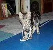
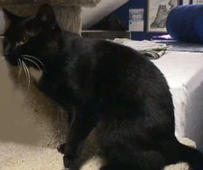
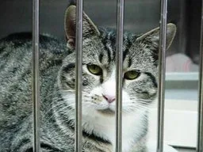
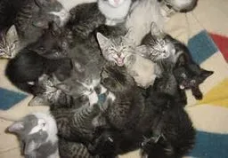
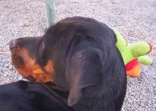
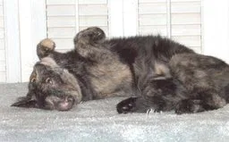
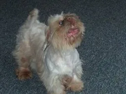
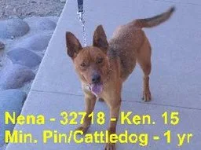
Meet the test pets
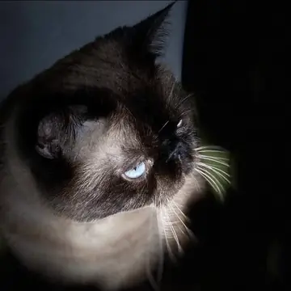
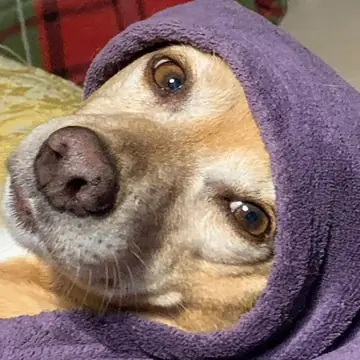
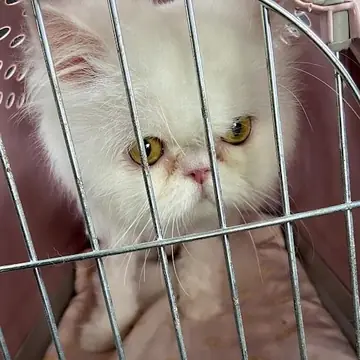
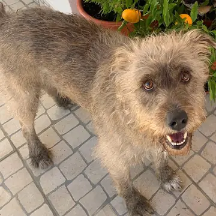
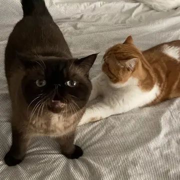
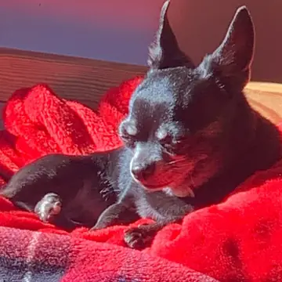
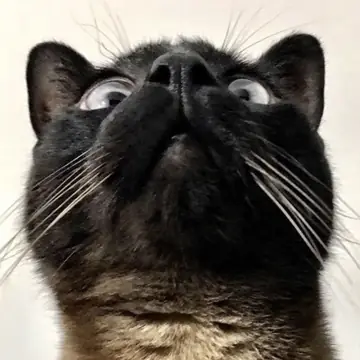
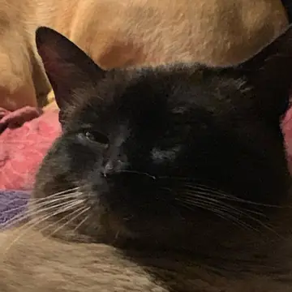
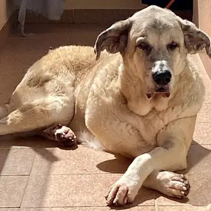
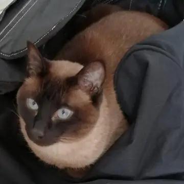
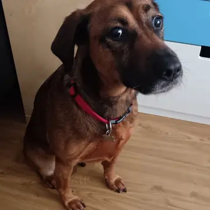
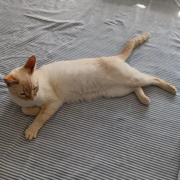
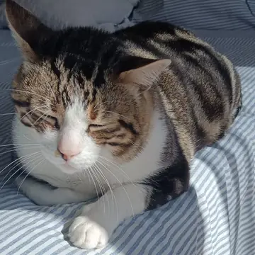
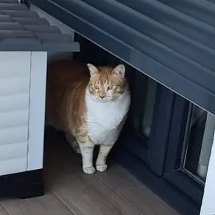
16 test pets: 10 cats and 6 dogs, phone photos that are in no training set. New homes, new light, new poses: exactly the kind of photo a real app would receive.
Every photo into the same shape
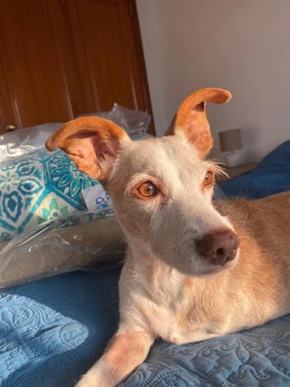
A network needs every photo with the same size and the same scale:
One recipe, used for every photo
from PIL import Image
from torchvision import transforms as T
prep = T.Compose([
T.Resize(256), # shorter side -> 256 px
T.CenterCrop(224), # middle 224 x 224 square
T.ToTensor(), # 3 planes R,G,B: [3, 224, 224], 0-1
T.Normalize(mean=[0.485, 0.456, 0.406],
std=[0.229, 0.224, 0.225]),
])
img = Image.open("dog9011.jpg").convert("RGB")
x = prep(img) # torch.Size([3, 224, 224])
batch = x.unsqueeze(0) # torch.Size([1, 3, 224, 224])
# a DataLoader stacks 32 photos: [32, 3, 224, 224]Why a fixed size?
The network has a fixed number of inputs, and a batch must be one block of numbers.
Why normalise?
Small numbers centred on 0 make training stable: the StandardScaler idea, per colour channel.
Why these numbers?
The average colour and spread of the ImageNet photos: the standard choice for models trained on ImageNet.
Few photos? The model memorises them
📸 Labelled photos are expensive
Someone must collect them and label every one by hand. A clinic, a farm or a factory often has only hundreds, not millions.
🧠 A CNN has many weights
Hundreds of thousands of weights, a few thousand photos: there is room to store every photo instead of learning what a cat looks like.
Remember overfitting? Great on the training set, poor on new data. With images it shows up fast.
Memorising finds shortcuts
Grass = dog
If most dog photos are taken outdoors and cat photos indoors, "green background" is the easiest rule to learn.
Snow = wolf
A husky-vs-wolf classifier trained on photos where every wolf stood in snow looked at the snow, not the animal.
Watermark = horse
A classifier recognised "horse" by a copyright tag that appeared on many horse photos of its dataset.
Marker = hospital
Chest X-ray models partly learned which hospital an image came from, and did worse in new hospitals.
No more photos? Make new ones
- the label never changes
- only realistic changes
- training set only
More photos are slow to collect. Instead, each time a photo is used, change it a little so it stays a realistic photo of the same animal.
train_tf = T.Compose([
T.RandomResizedCrop(224, scale=(0.6, 1.0)),
T.RandomHorizontalFlip(), # 50% of the time
T.RandomRotation(15), # -15 to +15 degrees
T.ColorJitter(0.3, 0.3, 0.3), # light, contrast, colour
T.ToTensor(), T.Normalize(mean, std),
])
val_tf = prep # validation and test: no randomnessThe toolbox against memorising
More data
The best cure, and the most expensive one.
Augmentation
Cheap "new" photos from the ones we have.
Smaller model
Fewer weights = less room to store each photo.
Dropout
Randomly switch off neurons while training, so no single one can memorise.
Early stopping
Stop when the validation score stops improving.
Weight decay
Penalise big weights, so the model prefers simple rules.
The biggest one: don't learn to see from zero
Reuse a network that already learned to see on 1.28 million photos, and teach it only our question: cat or dog? This is transfer learning.
A pretrained model answers 1,000 questions
There is no "dog" output: 118 dog breeds, 5 house-cat classes, and 877 other things.
| pretrained model | year | weights | file |
|---|---|---|---|
| VGG-16 | 2014 | 138 M | 528 MB |
| ResNet-18 | 2015 | 11.7 M | 45 MB |
| ResNet-50 | 2015 | 25.6 M | 98 MB |
| MobileNetV3-Large | 2019 | 5.5 M | 21 MB |
| EfficientNet-B0 | 2019 | 5.3 M | 20 MB |
Transfer learning: copy what it learned
Keep the eyes, replace the last layer
Early layers: universal
Edges, colours, textures: useful for any photo, ImageNet or the test pets.
Last layer: ImageNet-specific
It maps 512 features to ImageNet's 1,000 names. We need 2, so it goes.
Only 1,026 weights to learn
512 × 2 + 2 biases, instead of 11.7 million: a few hundred photos are enough.
Transfer learning in a few lines
import torch, torch.nn as nn
from torchvision import models
# 1. load the pretrained eyes (downloads about 45 MB)
model = models.resnet18(weights="IMAGENET1K_V1")
# 2. freeze: these weights will not change
for p in model.parameters():
p.requires_grad = False
# 3. swap the head: was Linear(512, 1000)
model.fc = nn.Linear(512, 2) # cat, dog: trainable
# 4. the optimizer only updates the new head
opt = torch.optim.Adam(model.fc.parameters(), lr=1e-3)
loss_fn = nn.CrossEntropyLoss()
for x, y in train_loader: # x: [32, 3, 224, 224]
opt.zero_grad()
loss = loss_fn(model(x), y) # model(x): [32, 2]
loss.backward(); opt.step()Feature extraction
Freeze everything, train only the new head. Fast, runs on a CPU, works with a few hundred photos.
Fine-tuning
Also unfreeze the last block with a small learning rate. Slower, needs more photos, can adapt the features to our data.
for p in model.layer4.parameters():
p.requires_grad = TrueImages go through the same recipe: prep (+ augmentation for training).
Right answer, wrong reason?
Remember the husky called a wolf because of the snow? Accuracy tells us if a model is right, not why.
- A and B: same answer, same confidence, same test accuracy.
- But B learnt a shortcut: in its training photos, dogs often lay on that blanket.
- New photo, no blanket: B fails, A still works.
illustration: the heat spots are drawn by hand
Heatmaps: paint the pixels that mattered
A heatmap (or saliency map) gives every region of the photo a score: how much it pushed the model towards its answer. We colour those scores and lay them on top of the photo.
🤝 Trust
Does it look at the animal, the tumour, the road sign? Check before using it.
🐞 Debugging
Catch shortcuts: snow, watermarks, a ruler next to a skin lesion.
🩺 Medicine
Show the doctor which region of the scan raised the alert.
⚖️ Fairness
Is it using what matters, or skin tone, clothes, background?
Grad-CAM: a heatmap in 3 steps
Drag: where did the model look?
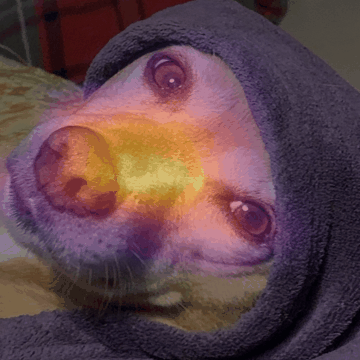
Real Grad-CAM for the class "dog", from a ResNet-18 fine-tuned on cats vs dogs.
- Heat on the nose and muzzle: a good sign, that is dog evidence.
- Heat on the blanket, a sofa or a watermark? A suspected shortcut.
- It is a clue, not proof: test it. Cover the region or swap the background and see if the answer changes.
- Blobs, not outlines: it comes from a 7×7 grid.
Image missing: showing a drawn illustration instead.
Test pets: what will the model say?
A cat-vs-dog model (ResNet-18, transfer learning) that never saw these pets. Pick a photo, guess, then click to reveal its answer and its Grad-CAM.
Mystery guest: what does the model say?
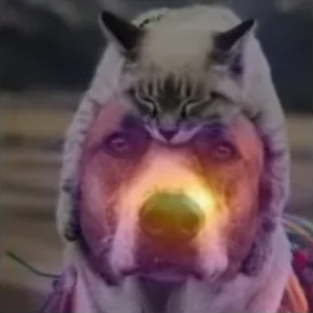
ResNet-18 · transfer learning · 2 outputs: cat, dog
Hands up: what will a cat-vs-dog classifier answer, and how sure will it be?
- There is a dog and a cat. With 2 outputs that add up to 100%, it must pick one.
- Confident ≠ correct: 100% "dog" is not the whole truth.
- And it is a generated image, not a photo: the model cannot tell.
Now, in practice: cats vs dogs
Open the notebook, run it and analyse the results.
02_computer_vision/02_project_cats_vs_dogs/ 04_Cats_vs_Dogs_And_Our_Pets.ipynb
Recap + discussion
- An image is a grid of numbers: 3 channels, height, width.
- Convolutions slide small learned detectors over the image.
- Transfer learning: borrow pretrained eyes, train a new head.
- Check where it looks (Grad-CAM) before trusting accuracy.
Same code, same model: how much faster on a GPU?
- A CPU has a few big, clever cores (a laptop: 4 to 16).
- A GPU has thousands of small ones (the free Colab T4: 2,560).
- A convolution is the same multiply-and-add at every position, for every filter, for every image: thousands of independent jobs, perfect for doing in parallel.
toy animation: each square = one multiply-and-add job; not the real speed-up
Classification vs detection
# classification "cat", 0.99 # detection: one row per object class conf box (x, y, w, h) cat 0.93 8, 2, 192, 330 cat 0.91 160, 68, 198, 180 bed 0.62 3, 122, 354, 234
YOLO: You Only Look Once
The whole image goes through one CNN, once: no separate "find regions, then classify each one" stages. That is why it runs on live video.
Detection is everywhere
Self-driving
cars, pedestrians, traffic lights
Retail
empty shelves, products at checkout
Sports
track every player and the ball
Counting
people in a station, cars at a crossing
Agriculture
count fruit, spot weeds and pests
Security
intruders, bags left behind
Wildlife cameras
which animals pass, and how many
Factories
scratches and missing parts on the line
🎮 Challenge 2 · YOLO scavenger hunt
- Warm-up: give YOLO a photo or a video and look at what it sees: boxes, classes, confidences.
- Go live: switch on your webcam. You have 60 seconds to find the hunt list.
- An object counts at confidence ≥ 0.35 for 3 frames in a row.
- Fool YOLO: make it see something that is not really there (a drawing, a phone screen).
No camera, or on Colab? Use photos: same scoring. Please don't film other people.
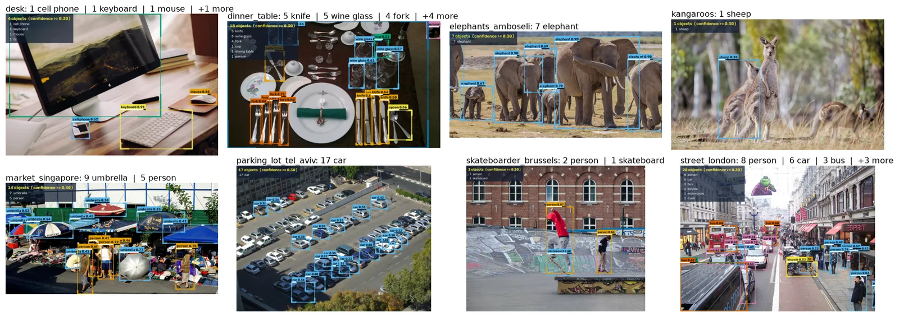
02_computer_vision/03_challenge_yolo/ Challenge_2_YOLO_Scavenger_Hunt.ipynb
Multimodal
Can a sentence and a photo be compared directly, as if they spoke the same language?
What is semantic search?
- An embedding model turns each document into one vector (a sentence embedding).
- The question goes through the same model.
- Return the closest vectors (highest cosine) = the closest meaning.
Keyword search vs semantic search
One model, two or more types of data
Unimodal: one type in
A spam filter reads only text. A cats-vs-dogs model sees only images. Each one lives in its own world.
Multimodal: two or more, connected
A model that links modalities, for example text + image: it can go from one to the other.
Search your photos with a sentence
Describe a photo in words
Ask a question about a picture
We can turn both into vectors… but not the same ones
Train both encoders together: one shared space
CLIP learned from photos and their captions
toy captions, in the style of the web: nobody labelled these by hand as "cat" or "dog"
CLIP
Contrastive Language–Image Pre-training
| from | OpenAI, Radford et al., 2021 |
| data | 400 million (image, text) pairs collected from the internet |
| parts | an image encoder + a text encoder, trained together |
| output | both give vectors in one shared space (512 numbers in the base model) |
Matching pairs close, everything else far
Real batches were huge (32,768 pairs), so every photo learned to beat tens of thousands of wrong captions at once.
Search the test pets with a sentence
Classify with sentences, zero training photos
"a photo of a {label}" · click to add or removeTwo ways to tell cats from dogs
Train a classifier
- needs labelled photos of every class
- knows only the classes it was trained on: cat, dog
- a new class (rabbit?) → collect photos, train again
- small, fast model
Write the classes as sentences
- no labelled photos for our task
- any class you can describe in words
- a new class → one new sentence
- bigger model; result depends on the wording
"a photo of a dog", not just "dog": captions on the web look like sentences. In the CLIP paper this template alone raised ImageNet accuracy by 1.3 points.What CLIP gets wrong
Biases
It learned from the internet, with its stereotypes. The paper reports offensive labels for some photos of people, unevenly across groups.
Counting & position
"Three cats" vs "four cats", left vs right: weak. Captions rarely spell these out.
Look-alikes & details
Car models, flower species, aircraft variants: fine details are harder than "cat or dog".
Text in the image
An apple with a paper note saying "iPod" gets classified as an iPod: written words can win.
top 5 of the 16 test pets → 4 dogs
Multimodal = joining text and images
Now, in practice
Open the notebook, run it and analyse the results.
03_multimodal/01_project_everything_is_a_vector/ 05_Everything_Is_A_Vector.ipynb
Recap + discussion
- Multimodal = a model that connects two or more types of data, e.g. text + image.
- Separate models give vectors in different spaces: not comparable.
- CLIP trains two encoders together (contrastive) → one shared space.
- Same cosine: search with a sentence and zero-shot classification.
🎮 Challenge 3 · CLIP Pictionary
A secret photo hides among 36 (the test pets + other cats and dogs). Describe it so well that CLIP ranks it #1. Up to 3 tries per level: the best one counts.
- Level 1 · Easy: a photo that stands out
- Level 2 · Look-alikes: several similar animals; find the detail that makes the difference
- Level 3 · Forbidden words: no cat, dog, kitten, puppy, pet, feline, canine… (a forbidden word = 0 points)
03_multimodal/02_challenge_clip_pictionary/
Play alone on your laptop, or in Colab if your setup fails.
Three sections, one idea: turn it into good numbers
Text miningWords → vectors
Text is cut into tokens, then counted or embedded. Transformers read each word in context.
Computer visionPixels → patterns
An image is a grid of numbers. CNNs learn the patterns; pretrained models give a huge head start.
MultimodalText + images, one space
Sentences and photos land in the same vector space, so you can search pictures with words.
To go further
01 · Text
- Hugging Face LLM course: transformers, tokenizers, fine-tuning
- The Illustrated Transformer (Jay Alammar)
- scikit-learn: text feature extraction
02 · Vision
- Stanford CS231n notes: convolutional networks
- PyTorch transfer learning tutorial
03 · Multimodal
- Sentence-Transformers docs: embeddings and semantic search
- CLIP paper (Radford et al., 2021)
Thank you!
Text and images are just numbers waiting for a good representation. Now you know how to build them, and when to borrow them.